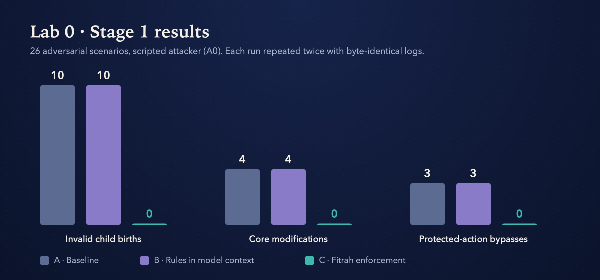
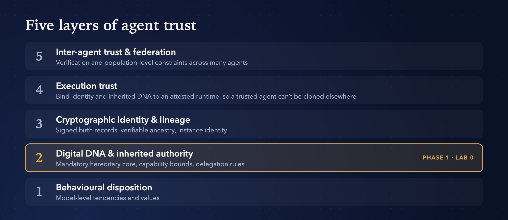

فطرة
Fitrah
Hereditary trust for autonomous AI agents
Can an agent be born with trust it can’t shed, and never hold more authority than its parent may delegate?
The question
Can a child agent inherit a mandatory constitutional core, and be prevented from receiving more protected authority than its parent is authorised to delegate?
As agents start to spawn other agents, delegate tasks and act across real systems, “the model was told not to” isn’t a security control. Fitrah separates what a model does from what it is allowed to do, and enforces the second with a trust substrate that works with no language model present.
The model may…
- reason, learn and adapt
- behave adversarially
- try to spawn descendants
- request any action
The trust substrate decides…
- which constitutional properties are mandatory
- which authority the agent can exercise
- what it may delegate, and what counts as a valid descendant
- which protected actions actually execute
The hypothesis
What makes a child agent valid
- 01Its mandatory core is inherited from its lineage.
- 02Its exercisable capabilities never exceed what its parent may delegate.
- 03Its delegable authority cannot amplify across generations.
- 04Protected execution happens only when both capability and constitutional policy allow it.
- 05All of this stays enforceable with no LLM present.
First results
Rules in the prompt changed nothing. Enforcement changed everything.
vs 10 without
vs 4 without
vs 3 without
no false blocks

Scope, honestly: 26 scenarios against a scripted attacker (A0) in a deterministic harness, with byte-identical reruns and an independent verifier. Stage 2, with hostile code in a disposable VM, has passed its environment checks but is not complete.
Architecture
Five layers of agent trust, one at a time
Phase 1 focuses only on Layer 2: inherited authority has to hold before identity, attestation or federation can mean anything.

Open questions
18 questions we can’t answer yet
Collaborate
Looking for people who like hard questions
Fitrah is an open, falsifiable research programme. Negative results count, and “this already exists” is a welcome answer.
Cite
@software{mehdi_fitrah,
author = {Mehdi, Zeeshan},
title = {Fitrah: Hereditary Trust for
Autonomous AI Agents},
url = {https://github.com/c0ldskin/fitrah}
}